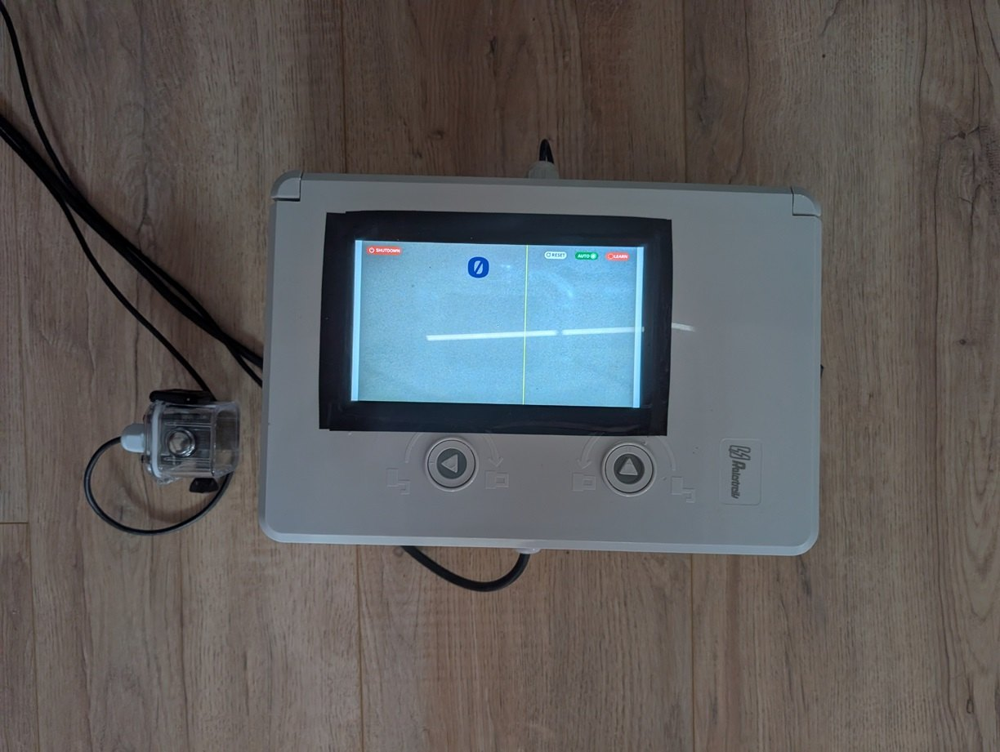
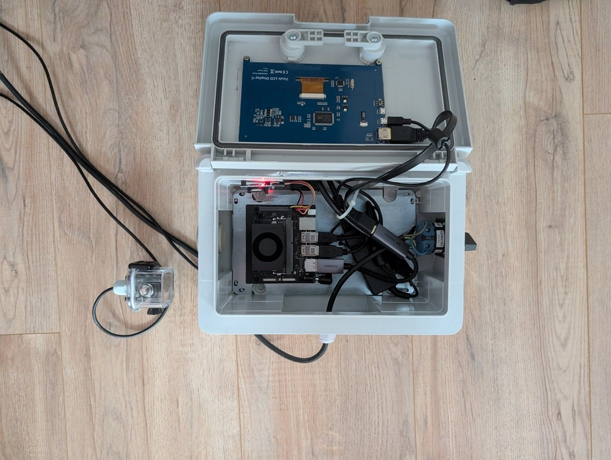
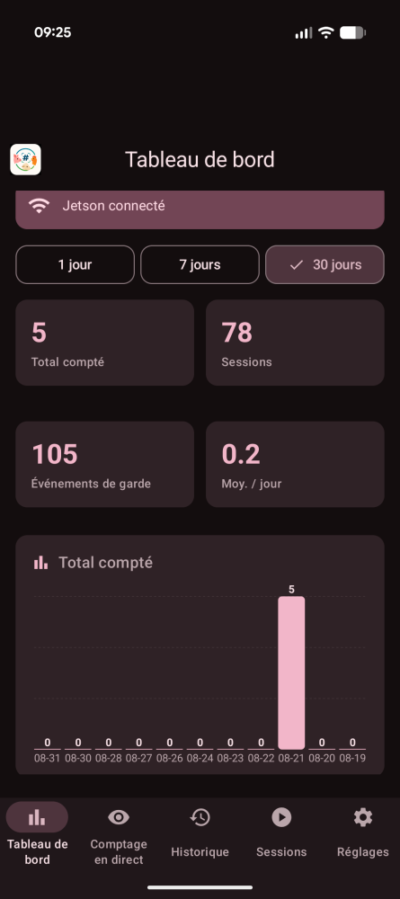
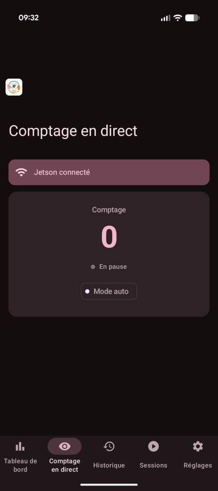
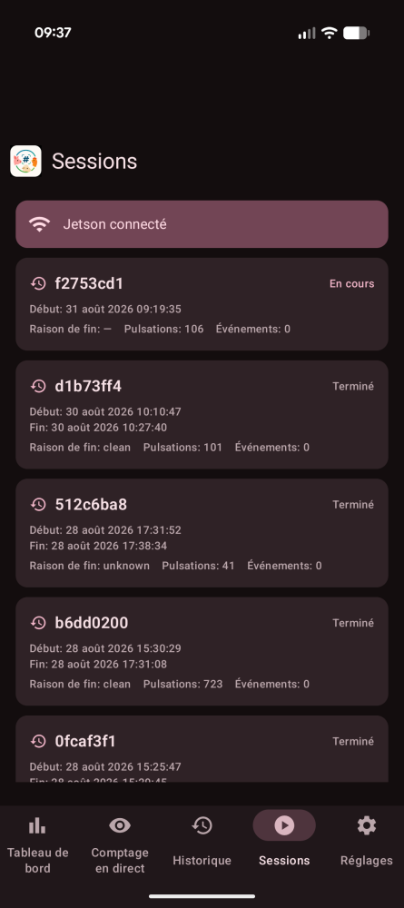
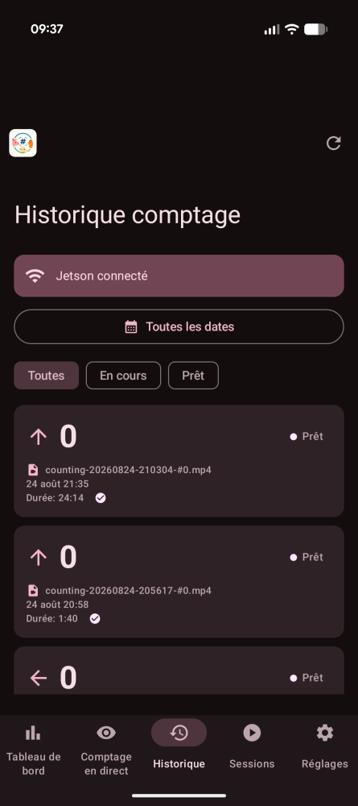
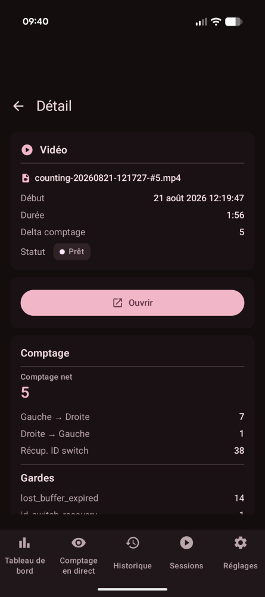
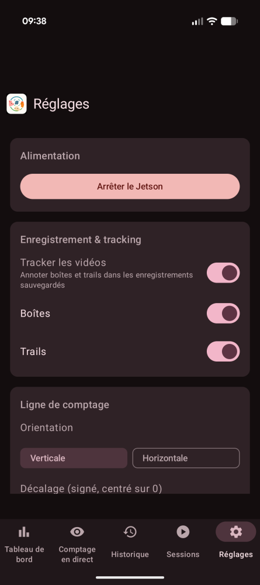
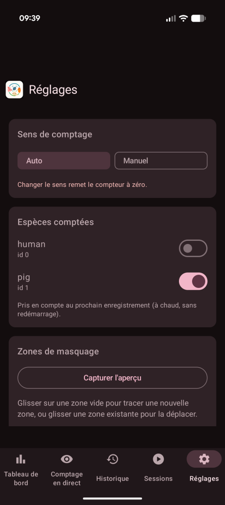
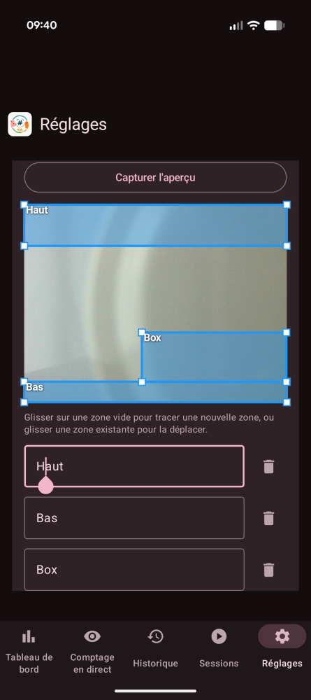

Aperçu
Une caméra fixe pointe vers une ligne de comptage. Chaque animal qui la traverse est suivi par OC-SORT (avec des gardes personnalisés anti-inversion d'ID) et le système maintient un compteur net bidirectionnel. Conçu pour toute espèce détectée par le modèle YOLO entraîné (cochons, moutons, vaches, volailles…). Un clip vidéo est enregistré automatiquement à chaque détection et s'arrête après ~2 min sans détection. Conçu pour un usage quotidien (allumé le matin, compteur à 0, éteint le soir) ou en continu 24/7 (le compteur s'accumule, réinitialisable à la demande).
30 fps
ONNX → engine
+ gardes anti-ID-switch
franchissement
+1 / −1
Démo en action
Le compteur en marche réelle — la caméra fixe, la ligne de comptage (jaune), les pistes OC-SORT, et le compteur net qui évolue à chaque franchissement. Deux espèces, deux déploiements :
Vidéos enregistrées automatiquement par le système à chaque détection.
Le boîtier
Le cœur du système : un NVIDIA Jetson Orin Nano 8 Go dans un boîtier compact, alimenté par un adaptateur USB-C, avec une caméra USB fixe pointée vers la zone de comptage. Refroidissement passif (sans ventilateur), silencieux, conçu pour tourner 24/7 dans un bâtiment d'élevage. Le système démarre tout seul au branchement (K3s relève le pod de comptage) — un simple on/off suffit.


Architecture
Le projet est réparti en deux dépôts qui communiquent
uniquement via des fichiers partagés dans deux hostPaths
(/conf pour la config/contrôle, /files pour les
médias/historique) — aucun HTTP/RPC entre le pod de comptage et le
companion. Le contrat IPC est documenté dans
docs/IPC_CONTRACT.md,
tenu byte-identique dans les deux dépôts.
Countingapp (ce dépôt)
Le cœur du comptage : tracking OC-SORT, pipeline de comptage,
TensorRT, le pod K3s countingapp (DaemonSet), et le setup
système/K3s/RTC du Jetson. Écrit la counting-history.jsonl +
les vidéos dans /files, lit la config depuis /conf.
- Pipeline : détection → masquage zones → tracking → franchissement → compteur
- Hot-reload
runtime-settings.jsonà idle (BL-86) - Snapshot JPEG périodique vers
/files/snapshot.jpg
Companion + App Android (dépôt sœur)
Le Jetson companion (service systemd Python sur le port 8090) fait le pont HTTP entre l'app Android et les fichiers partagés. L'app mobile affiche les compteurs, l'historique, et pilote les réglages (classes, ligne, masques) à distance.
GET/PUT /api/settings→ lit/écrit/confGET /api/snapshot→ sert l'aperçu caméra- Édition visuelle des zones de masquage (dessin/déplacement/redimensionnement)
Fonctionnalités
Classes configurables (BL-78)
Compte un sous-ensemble configurable des classes du modèle (multi-espèces). global = somme des sous-compteurs. Pilé depuis l'app, sans redémarrer le pod.
Ligne de comptage (BL-83)
Orientation vertical | horizontal + décalage
signé (pourcentage du cadre), centré par défaut. Directionnels
UP/DOWN pour une ligne horizontale.
Zones de masquage (BL-87)
Rectangles d'exclusion normalisés : les détections dont le centroïde tombe dans une zone sont droppées avant le tracking (pas de track → pas de comptage). Générique, toutes espèces.
Hot-reload à idle (BL-86)
Les réglages /conf/runtime-settings.json sont rechargés
en-processus à la prochaine fenêtre d'inactivité —
aucun redémarrage de pod. Appliqués hors enregistrement.
Snapshot caméra (BL-88)
La countingapp écrit une JPEG brute (/files/snapshot.jpg)
~toutes les 5 s pour que le companion/ l'app affichent un aperçu live et
permettent de dessiner les masques dessus.
Gardes anti-ID-switch
OC-SORT + gardes personnalisés (COUNTING_GUARD_MAX_AGE,
fenêtre de ré-association, hystérésis H=0). Compteur global +
historique counting-history.jsonl.
Le companion & l'app Android
L'expérience opérateur se fait depuis un téléphone Android. Le
companion Jetson (service systemd Python, port 8090) est
le pont HTTP entre l'app et les fichiers partagés /conf +
/files. L'app découvre automatiquement le Jetson (hotspot ou
WiFi maison) par sonde /api/identify — pas de sniffing SSID,
pas de permission de localisation.
L'app Android
- Dashboard — compteurs agrégés + sessions
- Compteur live — compte net bidirectionnel en direct
- Historique — liste des vidéos, téléchargement/ouverture
- Démarrages — historique de boot
- Réglages — IP Jetson, synchro heure manuelle, éditeur de zones de masquage
- Material 3, thème sombre, FR/EN (suit la locale)
Éditeur de zones de masquage
Dans Réglages → Zones de masquage : capture de l'aperçu caméra puis édition visuelle directe sur l'image :
- Dessiner une zone (glisser sur une zone vide)
- Déplacer une zone (glisser à l'intérieur)
- Étirer par bords/coins (glisser un bord ou un coin)
- Nommer chaque zone (champ éditable + label sur l'image)
- Enregistrement via
PUT /api/settings(validation stricte) - Bascule d'overlay Afficher les zones à l'écran
Résilience réseau : l'IP Jetson caché est invalidée à la perte WiFi + retry sur erreur réseau — le basculement maison ↔ hotspot est robuste (PR #22).
L'app en images








Validation
La logique de comptage est validée sur des vidéos de référence via
scripts/validate_on_jetson.sh → validation-report.json.
Le nombre d'animaux compté est comparé à la valeur attendue déduite du nom
de fichier. Mode standard (vidéo de référence unique) par
défaut ; --full (manifeste des vidéos
prioritaires) uniquement quand la branche touche au code de décision de
comptage. Voir
docs/06_validation.md.
La vidéo montrera un run de référence : détections, tracks, ligne de comptage, et le compteur net atteignant la valeur attendue.